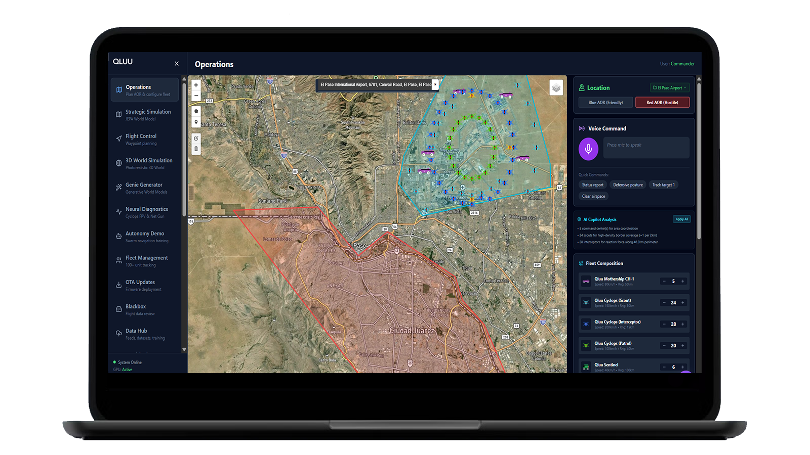

The Verification Protocol: How We Know Our AI Actually Works

Early in our development of QLUU, we discovered that the majority of our trajectory prediction models were performing worse than a simple physics baseline. Some by orders of magnitude.
Our internal documents said they were at high accuracy. Our evaluation pipeline said they were passing. Our model registry listed them as "verified."
They were all wrong. The test that proved it took four seconds to run.
What happened?
Our evaluation pipeline had a subtle bug: it shared data preprocessing code with the training pipeline. The eval was reproducing the same errors that training was making, and calling them correct. The models weren't learning physics. They were memorizing noise. And our eval was confirming the memorization as accuracy.
This is the hardest problem in AI for defense. Not building the model. Not getting the loss to go down. Knowing whether it actually works.
We responded by building what we call Rule Zero: Nothing exists until independently verified.
Rule Zero has five checkpoints:
- The artifact exists. A trained checkpoint, not just architecture code.
- An independent verification exists. An eval script that shares zero code with training.
- The verification passes on held-out data. Data the model has never seen.
- The result beats the appropriate baseline. Not "loss went down," but better than the naive physics alternative.
- A human has reviewed it. Looked at actual predictions and confirmed they make physical sense.
If any checkpoint fails, the model is listed as "IN DEVELOPMENT" or "UNVERIFIED," no matter how good the training metrics look. We don't round up. We don't hedge. We write the truth.
After rebuilding our evaluation pipeline from scratch with zero shared code and strict holdout splits, we retrained every model. Today, our trajectory prediction family passes all five checkpoints across every domain.
But here's the part that matters: we publish our methodology, not just our results. When a government customer asks "how do you know this works?", we don't hand them a slide deck with cherry-picked numbers. We hand them the verification protocol and invite them to run it themselves.
Most defense AI companies tell you their accuracy numbers. We tell you how we know they're real, including the time they weren't.